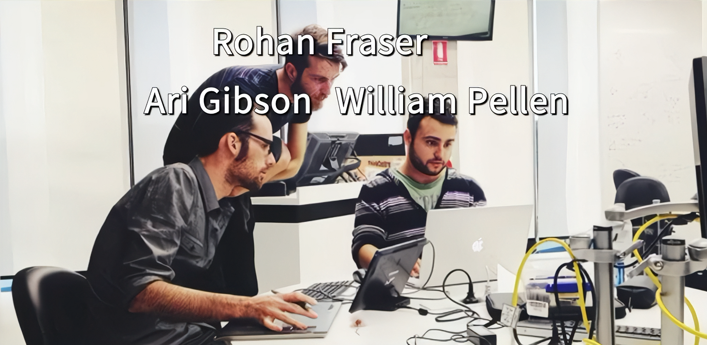
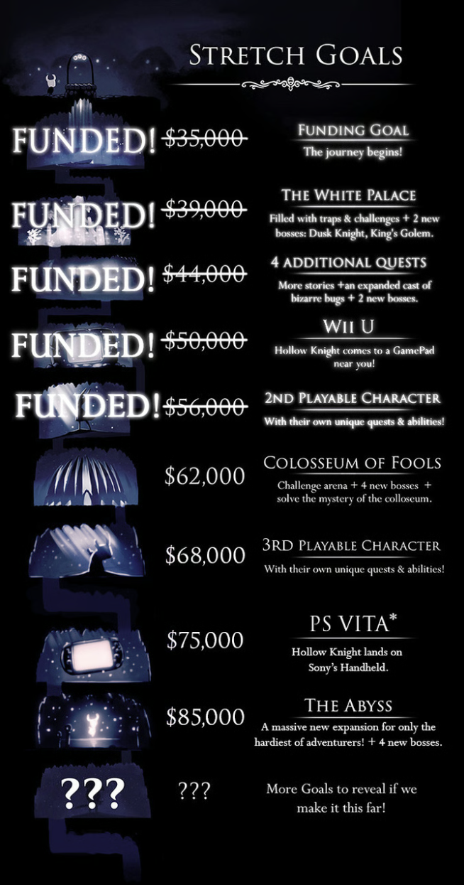
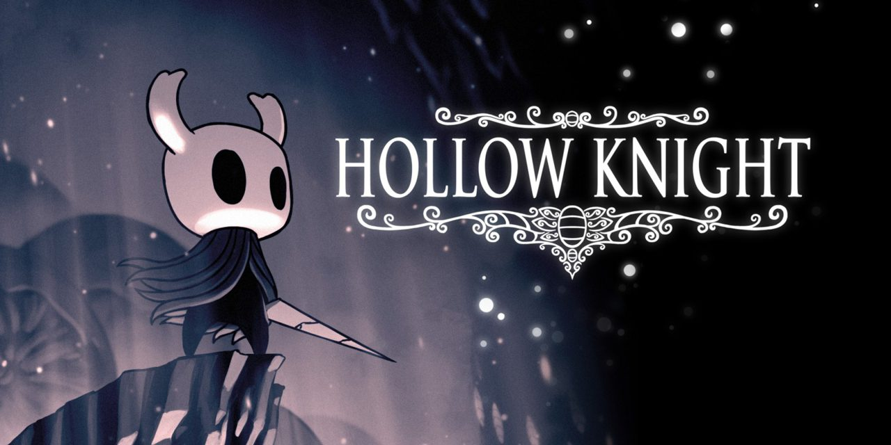
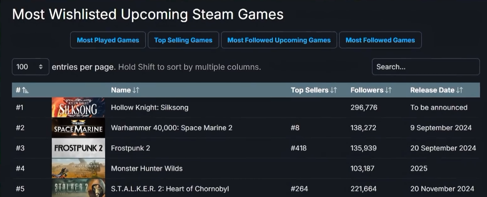
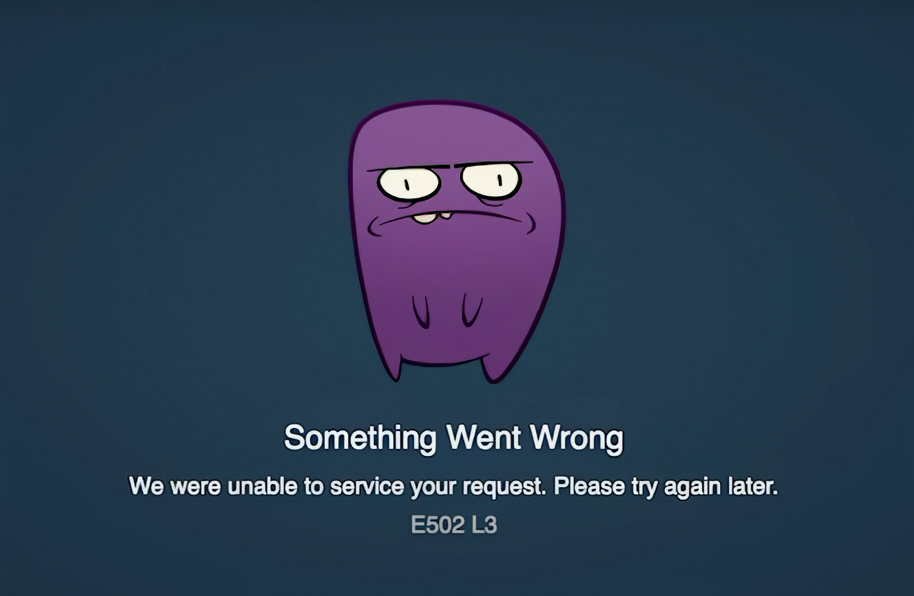
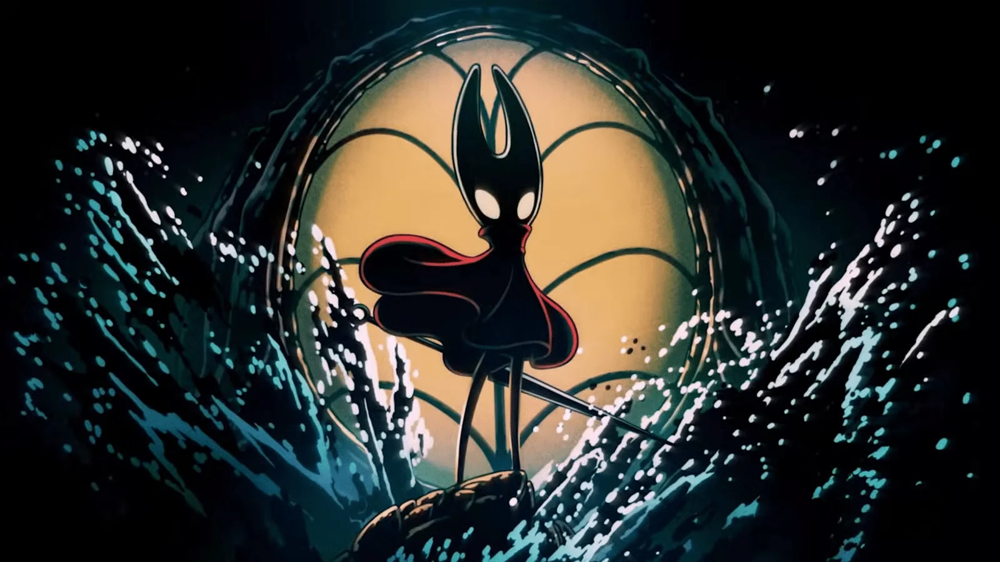
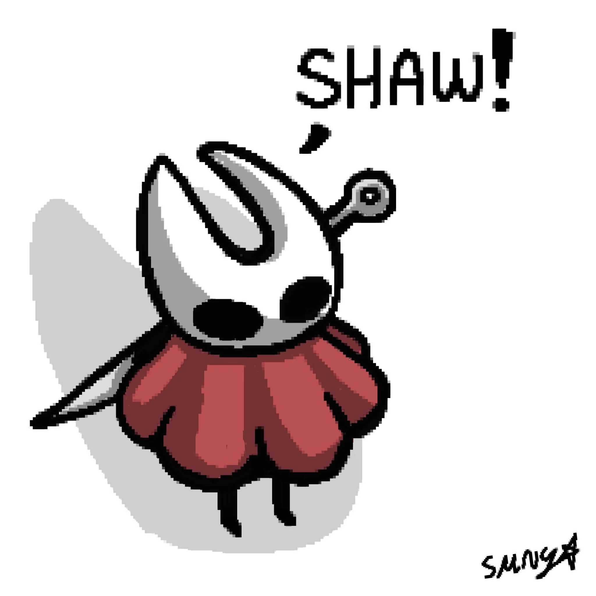

Team Cherry was originally founded by three core members—Ari Gibson, William Pellen, and Jack Vine.

When starting their first game, Hollow Knight, they used Kickstarter to fund.
During the campaign, they set a series of stretch goals. When reaching the $56,000 milestone, they promised a 2nd playable character. That exact goal became the origin of Hollow Knight: Silksong.


After Hollow Knight surpassed 15 million sales, Team Cherry began working on a DLC. In February 2019, they officially announced it had evolved into a full standalone sequel: Silksong.
The playable demo at E3 2019 looked polished and near-complete. However, repeated delays pushed the game back—from the Xbox showcase in 2022 all the way to September 2025.
Despite the agonizing wait, fans kept faith in Team Cherry, keeping Silksong locked firmly at the #1 spot on the Steam Wishlist for years.

During the silence, the community created iconic memes that sustained them, such as "I'm so lucky to be able to play Silksong right after finishing Hollow Knight!"
When Silksong finally launched, the massive wave of players instantly overwhelmed the servers, causing Steam to crash and leaving countless fans stuck on the checkout screen, unable to play.

True to their style, Team Cherry refused to send out early review copies. They wanted every player to experience the game completely blind at the same time—free from media scores, spoilers, or pre-made guides.
Looking ahead, Team Cherry announced an upcoming free DLC titled Sea of Sorrow, scheduled to release sometime within 2026.

Knowing Team Cherry's track record with deadlines, we can probably expect a few delays—lol. However, just a couple of days ago, Team Cherry confirmed their appearance at PAX Australia, marking their first public appearance and news regarding Sea of Sorrow. Let's hope for some good news!
